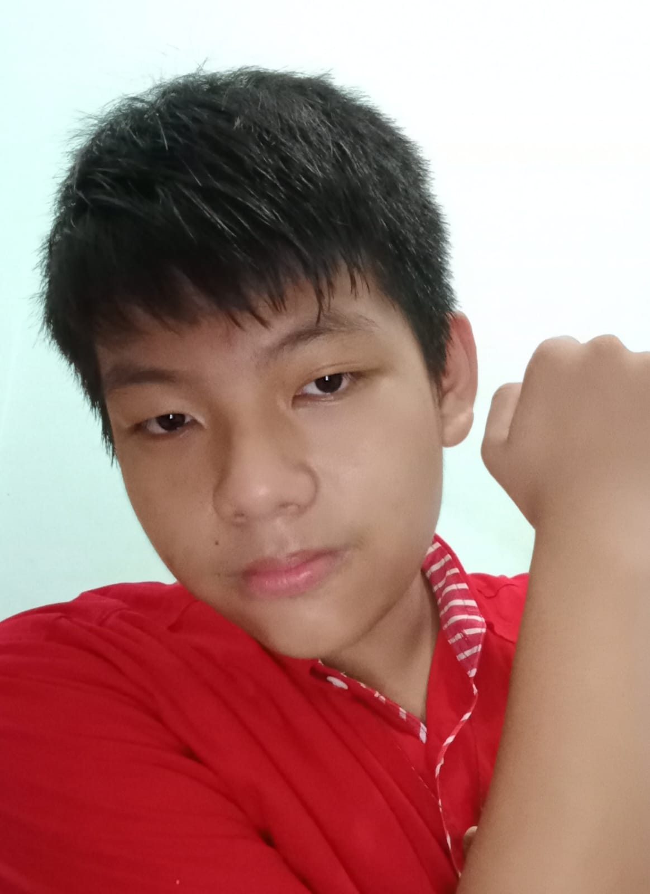

Halo, namaku Ethan dan aku adalah siswa dari SMK Negeri 1 Pangkapinang. Sekarang aku berusia 15 tahun dan mempelajari ilmu jurusan Desain Komunikasi Visual. Di Website ini, aku meletakan beberapa foto, dan project yang aku buat.
Aku selalu senang mencoba hal baru yang terlihat keren. aku selalu mempelajari sesuatu hal hingga aku bisa seperti mengcoding halaman website ini, akan tetapi aku selalu mudah lupa akan hal yang sudah ku pelajari jika aku belajar terlalu banyak dan terlalu lama.